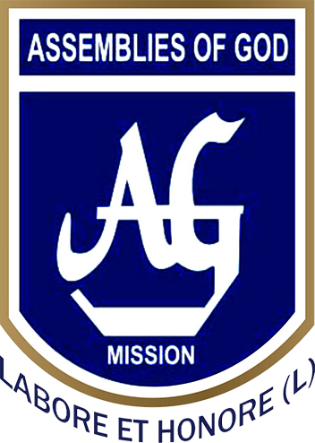

Logos

Assembly Of Church School
Dr Bc Roy Engineering College

Acharya Institute of Technology, or AIT, is a private co-educational engineering and management college in Bengaluru, India, affiliated with the Visvesvaraya Technological University (VTU) and accredited by the National Board of Accreditation (NBA). Established in 2000, it offers eleven undergraduate courses and eight postgraduate courses.[9] The college has links and collaborations with various industries and universities across the world.[10] It is one of the several institutes run by the JMJ Education Society
The Acharya Institute of Technology (AIT) was established in 2000 by Premnath Reddy, Chairman of the Acharya Group of Institutions.[4] The college is managed by the JMJ Education Society, Headquartered in Bengaluru.[15] AIT offers Thirteen Bachelor of Engineering (BE) courses, Six Master of Technology (M.Tech) courses, Master of Business Administration (MBA), Master of Computer Applications (MCA) and a PhD course in Mathematics. All courses are affiliated to the Visvesvaraya Technological University (VTU).[9] It was the first college under the VTU to start an undergraduate course in Mechatronics in Karnataka.

Acharya Institute of Technology, or AIT, is a private co-educational engineering and management college in Bengaluru, India, affiliated with the Visvesvaraya Technological University (VTU) and accredited by the National Board of Accreditation (NBA). Established in 2000, it offers eleven undergraduate courses and eight postgraduate courses.
Dr. B. C. Roy Engineering College (BCREC) is a private engineering college in Durgapur named after legendary physician Dr. Bidhan Chandra Roy, located in Paschim Bardhaman district, West Bengal, about 200 kilometers from the city of Kolkata, India. It was established on 21 August 2000 with its first batch of students. It offers undergraduate and postgraduate courses in Engineering, Technology and Management. The college is affiliated under All India Council for Technical Education and Maulana Abul Kalam Azad University of Technology formerly known as West Bengal University of Technology (WBUT).